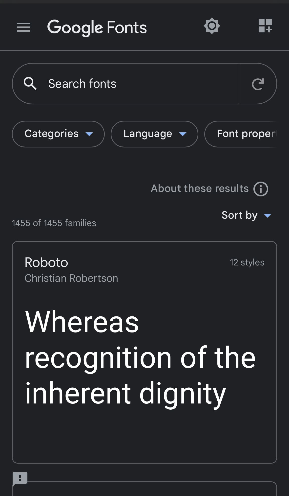

Visual Hierarchy
Netflix

Netflix uses a great method of arranging graphic elements by order of importance. By relying on principles relating to size, color, contrast, white and more, you can influence how users interact and they can purchase their services.
Visual hierarchy affects what you look at and focus on in a design, whether it's an image, graphic design, or web design. It's a key player in ct (i.e., how information is organized and displayed for easy understanding and navigation) and can greatly impact the user experience (UX).
Rule of Thirds
Longway
While the rule of thirds can be a very useful tool, it is not necessary to plan your website design around it. Use the philosophy as a guideline or a tool to tweak your design during the finalizing process. Toss an imaginary grid on a new site design and consider making placement changes to items that are close to key spaces on the rule of thirds grid.
More importantly, Longway uses the rule of thirds to their working with images on their site. They use it to scale theirimages. Remember to keep in mind where the object of each photo falls and what kind of movement or feel it creates.
Clean Design
Google Fonts

Google Fonts API has a good use of white-space making it have a clean design. The spacing around all the objects allows people who are viewing the page to stay calm when looking for a font.
Clean design comes mostly from the fact that all the fonts are separated into boxes and have spacing between them it just makes it more simple. “White Space in design composition is same as use of Silence in a musical composition. Without proportionate use of Silence, music is unstructured; some may call it noise. Similarly, without White Space, design is unstructured and difficult to consume”